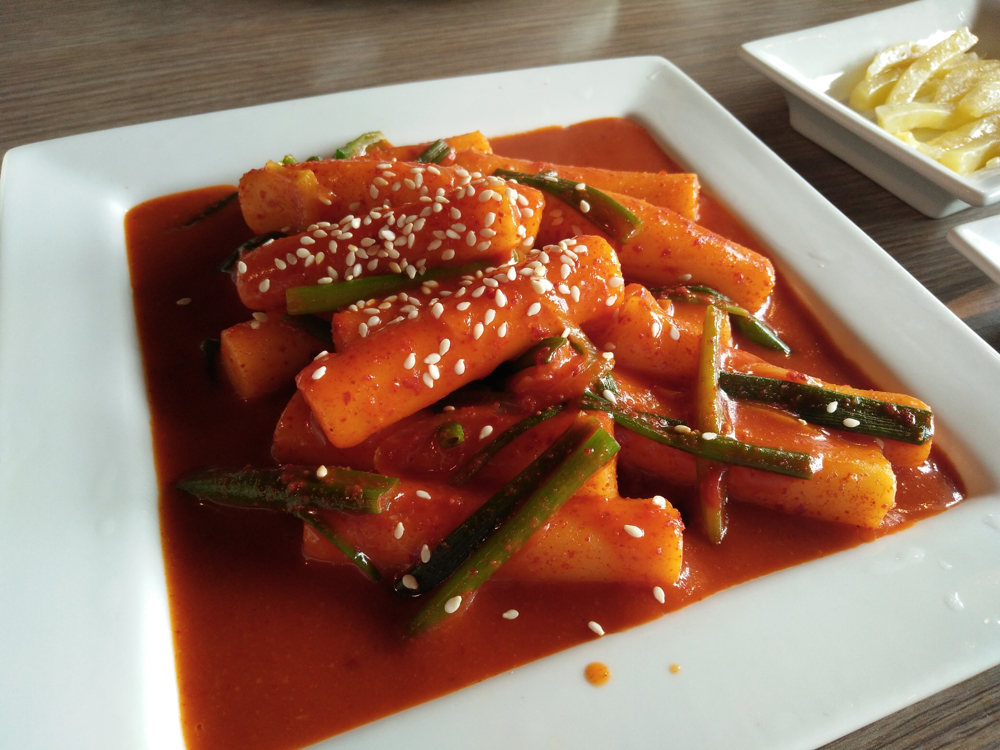

Home
Tteokbokki

Chewy rice cakes simmered in a spicy, savory sauce made with gochujang and gochugaru.
Ingredients
- 2-2.5 cups vegetable broth
- 1 small leek
- 2 carrots, peeled and sliced into disks
- 1 tablespoon minced garlic
- 2-3 tablespoons gochujang
- 1 tablespoon gochugaru
- 2 tablespoons low-sodium tamari or soy sauce
- 1 teaspoon cane sugar
- 16oz or 450g Korean rice cakes, thawed if frozen
- 1-1.5 teaspoons toasted sesame oil
- sesame seeds and scallions for garnish, optional
Directions
- Bring vegetable broth to a simmer over high heat.
- Add garlic; recude heat to medium-low and simmer for 2 to 3 minutes.
- Stir in gochujang, gochugaru, tamari, and sugar. Simmer for 1 to 2 more minutes.
- Add in carrots and rice cakes. Simmer for 5 to 6 minutes before adding leeks.
- Once leeks are added, simmer for 6 to 8 more minutes, until sauce has thickened and carrots are tender.
- Garnish with scallion and sesame seeds.